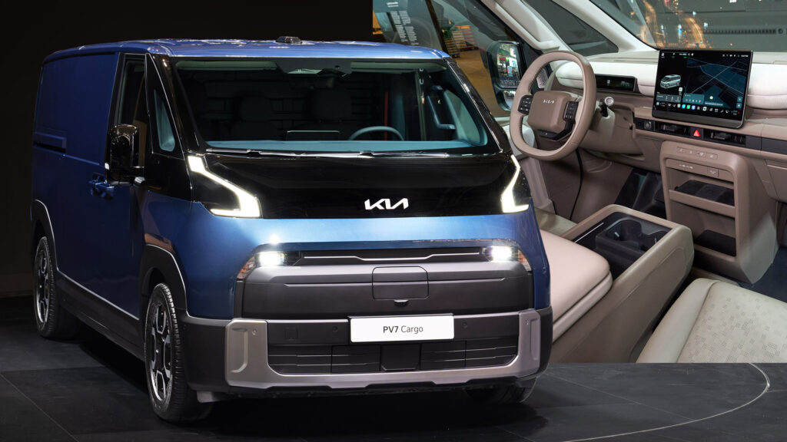

Kia PV7: a 5.35 m van with a 14.6-inch screen
A week after the spy shots, Kia revealed the production PV7 at IAA Transportation in Hanover: 5,350 mm long on a 3,500 mm wheelbase, one size up from the PV5. The cockpit pairs a 9.9-inch cluster with a 14.6-inch touchscreen running Android-based Pleos Connect and the Gleo AI assistant, backed by a two-spoke wheel with physical switches and a row of buttons under the display. Long-Rail Easy Remove seats slide or lift out for 7, 9 or 11 seats; 71.5 or 96.2 kWh packs give over 460 km WLTP. Korea and Europe, second half of 2027.
谍照曝光一周后，起亚在汉诺威IAA商用车展发布量产版PV7：车长5,350 mm、轴距3,500 mm，比PV5大一号。座舱为9.9英寸仪表加14.6英寸触屏，运行基于安卓的Pleos Connect与Gleo AI助手，双辐方向盘保留实体按键，屏幕下方也有一排按钮。长轨快拆座椅可滑动或整排拆除，提供7/9/11座；71.5或96.2 kWh电池，WLTP续航超460 km。2027下半年先上韩国和欧洲。
스파이샷 일주일 만에 기아가 하노버 IAA 상용차쇼에서 양산형 PV7을 공개했다. 전장 5,350 mm, 휠베이스 3,500 mm로 PV5보다 한 체급 크다. 콕핏은 9.9인치 클러스터와 14.6인치 터치스크린에 안드로이드 기반 Pleos Connect와 Gleo AI 비서를 얹고, 2스포크 휠의 실물 스위치와 화면 아래 버튼 열을 남겼다. 롱레일 이지 리무브 시트는 밀거나 떼어 7·9·11인승이 된다. 71.5 또는 96.2 kWh로 WLTP 460 km 이상. 2027년 하반기 한국·유럽 출시.
Carscoops →2026-09-15